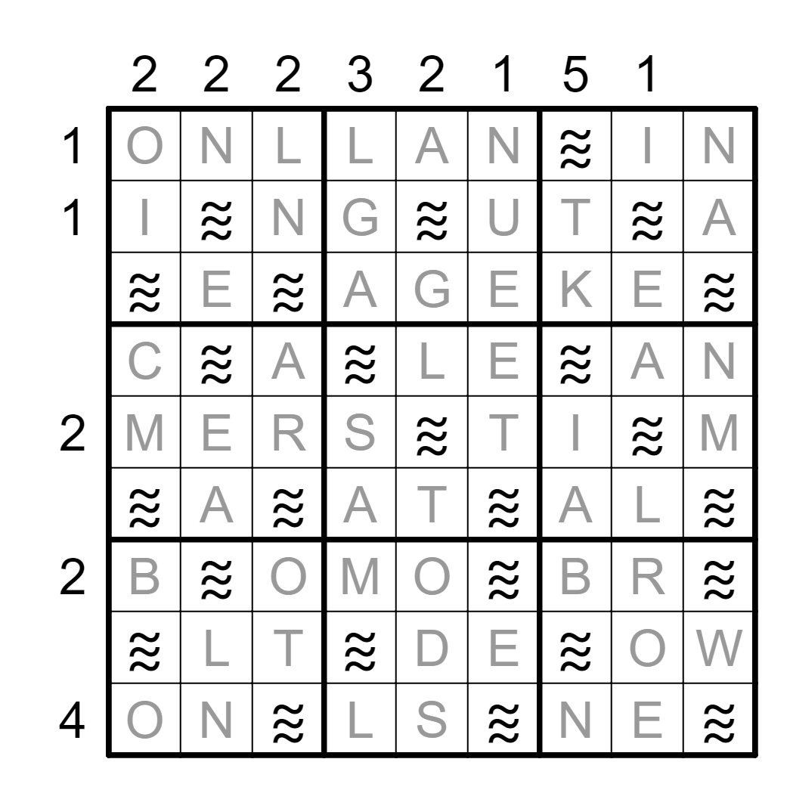
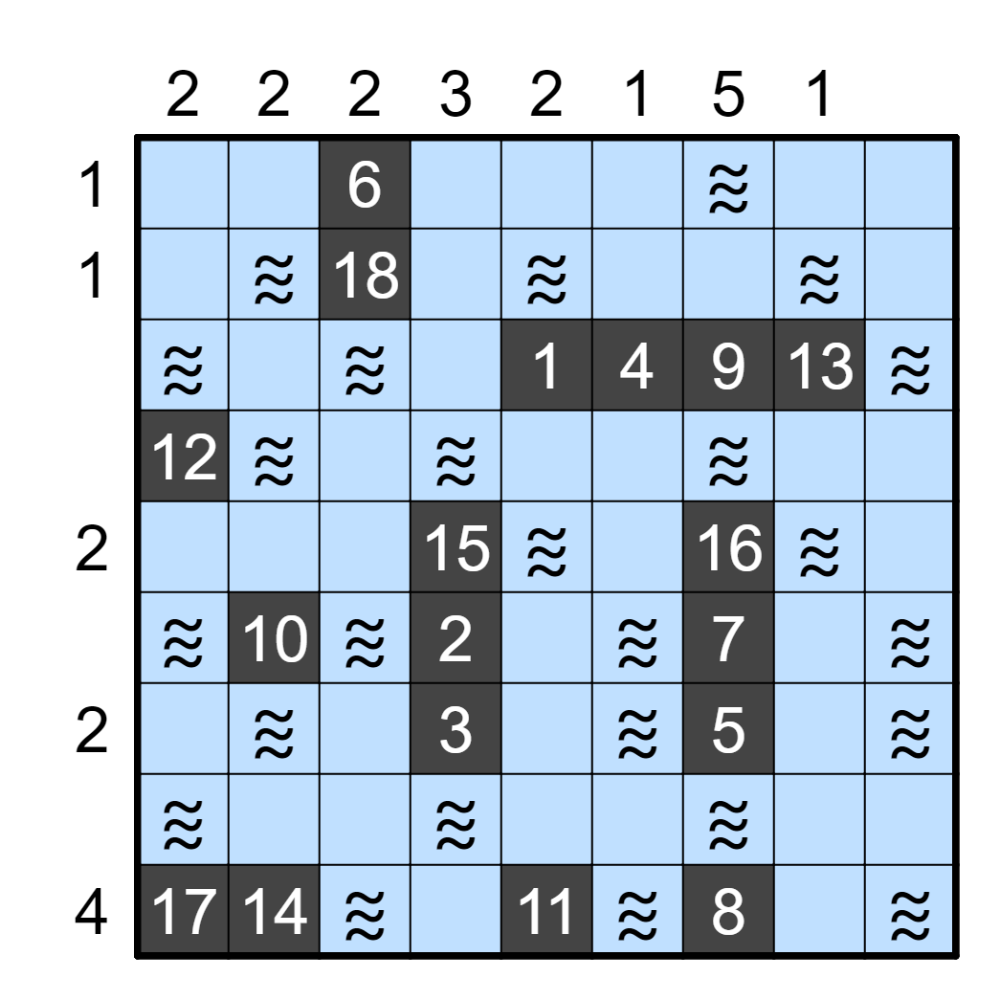
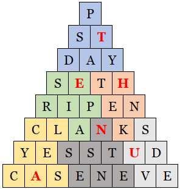

Every answer clues a word or phrase with a diacritical mark:
| ACE OF SPADES | MOTÖRHEAD |
| FEAR AND TREMBLING | SØREN KIERKEGAARD |
| FIFTEENTH BIRTHDAY | QUINCEAÑERA |
| ICE CREAM | Á LA MODE |
| NICE BOY | GARÇON |
| NIKKI AND PAULO | EXPOSÉ |
| TE REO | MĀORI |
| YAMOUSSOUKRO | CÔTE D'IVOIRE |
Read the letters in the given direction before or after the accented character—that is, "À → 1" means to take the character immediately after the Á in Á LA MODE, or L. This spells out LENTAL REGION GAME, so the answer is NEW POKÉMON SNAP.
Most of these, I hope, are straightforward, at least after seeing the answer, but EXPOSÉ is the name of the underrated Nikki and Paulo-centric episode of Lost, and NICE BOY is the old crossword puzzle trick of secretly meaning the French city of Nice. ICE CREAM has another plausible answer in HÄAGEN-DAZS, but I really needed the L; this has the unfortunate effect, though, that the clue phrase is pretty difficult to Wheel of Fortune if you haven't made that connection.
The labels of the 3x3 grids indicate different avatars of Vishnu (generally by literal translations of the name). In addition, the first three letters of the first word of each answer match the first three letters of one of the avatars.
| Dashavatara order | Grid label | Avatar | Answer |
|---|---|---|---|
| 1 | FISH | Matsya | MATRIX ONLINE |
| 2 | TURTLE | Kurma | KURDISH LANGUAGE |
| 3 | BOAR | Varaha | VARIABLE INTAKE |
| 4 | LION | Narasimha | NARCISS CAMERA |
| 5 | DWARF | Vamana | VAMPIRE LESTAT |
| 6 | WITH AXE | Parashurama | PARTY ANIMAL |
| 7 | DARK/PLEASING | Rama | RAMSAY BOLTON |
| 8 or 9* | DARK/ALL-ATTRACTIVE | Krishna | KRIPKE MODELS |
| 10 | WHITE HORSE | Kalki | KALE BROWNE |
* As I understand it, different Hindu traditions disagree on the eighth and ninth avatar of Vishnu, but most include Krishna in one of those positions.
The 3x3 grids in can be placed in Dashavatara order to recreate the Battleship logic puzzle. In addition, you can place one letter from the second word of each answer in the non-water cells of its corresponding grid fragment.
There's some ambiguity in assigning numbers to the ships in the grid, but the pictured configuration produces a meaningful clue phrase, GAME BLANK ASCENSION, which (combined with the given enumeration) gives the answer ULTIMA IX (part of another series with a notable Avatar).
I like this meta, but it has some issues that could have been resolved with test-solving: First, the assignment of numbers to ships is almost the given order, so I know a few teams that ended up with a slightly garbled clue phrase. Second, that clue phrase proved to be somewhat difficult to decipher; the correct game is on the Wikipedia disambiguation page for "Ascension", so I thought it would be OK, but just trying to solve it with Google is tough. My apologies to solvers who stumbled on either roadblock.
| Perry Mason title word / Scream actress Campbell | CASE / NEVE |
| Metallic sounds | CLANKS |
| Independence or Groundhog follower | DAY |
| Letter confused with rho | P |
| Develop | RIPEN |
| Late night host Meyers | SETH |
| Ave. alternative | ST |
| Agree / Wall part | YES / STUD |
Each can be placed in one row of the given triangular grid. After that, the feeder answers can be found reading Boggle-style, with TRI replaced by a single letter:
| DAYTRIPS | T |
| AIRSTRIP | E |
| TRINKET | H |
| TRICYCLES | A |
| TRITENESS | N |
| STRIVED | U |
It's not strictly reading order, but taking the letters in the order suggested by the diagram at the bottom of the page gives the answer TEHANU.
Oof. As originally posted, the crossword clues were much more ambiguous (such as "HTML element" for P or "Thing studied" for CASE); my idea was that solvers would use the feeder answers to narrow down those possibilities, but in practice it turned out way too hard. I'm also sorry for the awkward ordering of letters for the final answer (especially since the answer isn't particularly recognizable); it turns out I'm not a strong enough crossword setter to work fix it. (As it is, all the feeder answers form cycles in the grid so that Qxw would have more options when filling the grid.)
Every answer can have the first letter replaced with SH to form a new word or phrase. The replaced letters are unique, A to L, providing an ordering.
| Answer | SH- word/phrase | Extracted letter | Order |
|---|---|---|---|
| AARON | SHARON | R | 6 |
| BACKING UP | SHACKING UP | K | 5 |
| CRIMP | SHRIMP | P | 4 |
| DRUNKEN | SHRUNKEN | U | 7 |
| EYING | SHYING | I | 10 |
| FILLINGS | SHILLINGS | S | 8 |
| GAVE OFF | SHAVE OFF | A | 2 |
| HUNT | SHUNT | T | 9 |
| IED | SHED | E | 11 |
| JIMMY | SHIMMY | M | 3 |
| KOOK | SHOOK | K | 1 |
| LOWER | SHOWER | R | 12 |
Reading the indicated letters in order gives the answer KAMP KRUSTIER.
I thought this would be one of the tougher metas to spot, but it was the first puzzle solved after this set went live, and one of the first solves for a few other early people. I was eventually vindicated, though, as its currently one of the least-solved puzzles alongside Triangle of Sadness. The flavor text in this case was probably more helpful for experienced solvers, as it hints at cryptic crossword wordplay, and maybe old hands would also expect that one of the puzzles would use alphabetical ordering and specifically look for that?
Every answer clues a phrase in the form of "(monster) of (something)". The phrases are of different lengths so can be placed unambiguously in the given blanks.
| Feeder | Monster phrase | First letter | First order | Second letter | Second order |
|---|---|---|---|---|---|
| FOOLISH CONSISTENCY | The HOBGOBLIN of LITTLE MINDS | I | 5 | I | 5 |
| CUBIC PLANE CURVE | The WITCH of AGNESI | H | 2 | N | 6 |
| REGULAR ROUTINE | CREATURE of HABIT | A | 6 | T | 4 |
| LITTLE GUYS WITH BIG GUNS | The TERROR of TINY TOWN | E | 3 | Y | 7 |
| SWEENEY TODD | The DEMON BARBER of FLEET STREET | D | 4 | E | 2 |
| WARREN ZEVON | WEREWOLVES of LONDON | L | 7 | D | 1 |
| NATIONAL AIR AND SPACE MUSEUM | The SPIRIT of ST. LOUIS | T | 1 | S | 3 |
Reading the extracted letters in the given order gives THE DIAL for letters taken from the first words and DESTINY for letters from the second words. THE DIAL OF DESTINY is the answer.
I wanted to write something more thematic to the movie, but unfortunately Mark Halpin already wrote the best possible meta about cutting fingers off a few years ago.
First, identify the women pictured. A homophone (give or take) of each woman's name can come before one of the answers to form a common phrase.
| Carrie Fisher | FORWARD | CARRY FORWARD | |
| Scarlett Johansson | FEVER | SCARLET FEVER | |
| Grace Kelly | ANATOMY | GRAY'S ANATOMY | |
| Carole King | SINGER | CAROL SINGER | |
| Shirley MacLaine | YOU JEST | SURELY YOU JEST | |
| Bette Midler | THE FARM | BET THE FARM | |
| Jean Smart | THERAPY | GENE THERAPY | |
| Mary Steenburgen | MELODIES | MERRY MELODIES | |
| Mae Whitman | DECEMBER ROMANCE | MAY-DECEMBER ROMANCE |
Index into each answer by the number of pictures to get ANDY HARDY COMES HOME.
Each movie poster is for a film that is, like Top Gun: Maverick, supervocalic—that is, the title includes each vowel exactly once. The feeder answers are also supervocalic and can be paired with the posters based on the order of vowels. Use the star ratings to index into the answers.
| Crazy Stupid Love | CAULIFLOWER | ⭐⭐ | A |
| About Time | A CHORUS LINE | ⭐⭐⭐⭐⭐ | R |
| Deconstructing Harry | BERNOULLI'S LAW | ⭐⭐⭐ | R |
| Four Christmases | LOUIS B. MAYER | ⭐⭐ | O |
| Dangerous Minds | WAREHOUSING | ⭐ | W |
| The Ghost and Mrs. Muir | KEYBOARD MUSIC | ⭐⭐⭐⭐⭐ | O |
| Charlie St. Cloud | FAIR ENOUGH | ⭐ | F |
| Double Impact | LOUNGE LIZARD | ⭐⭐⭐⭐⭐ | G |
| Mary Poppins Returns | GASOLINE PUMP | ⭐⭐⭐⭐ | O |
| Dial M For Murder | DIALOGUE | ⭐ | D |
ARROW OF GOD is the answer.
The second half of each answer is an anagram of the first half with one letter changed.
| X | MAX | IMA | I |
| S | SET | TLE | L |
| T | BEAT | ABLE | L |
| E | RESE | RVES | V |
| A | ARTIS | TRIES | E |
Putting the letters in each column in the order given gives the answer TEXASVILLE.
I'm sorry to use six-letter answers that make the pattern hard to spot, but it was hard to find answers fitting this wordplay that also extracted the letters I needed.
Apply each transformation given to one of the answers.
| Transformation | Original answer | Transformed | Extracted Letter |
|---|---|---|---|
| Interpret the answer as cryptic crossword wordplay | BROKEN HEART | EARTH | H |
| Remove the antepenultimate letter, then swap the penultimate and final letters | DECAYED | DECADE | A |
| Swap the first two letters, then insert a biblical abbreviation between the second and third letter | MOORE | OMNIVORE | V |
| Remove the first letter, insert an N into the (new) fourth position, then replace the penultimate letter with a Best Picture nominee from 2015 or later | PLAUDIT | LAUNDROMAT | A |
| Insert a state abbreviation in the exact middle of the answer (coincidentally, the answer already ends in a state abbreviation) | SEND | SECOND | N |
| Replace the answer with the word immediately following it in a Beatles song title | ROCKY | RACCOON | A |
| Replace the name of a band with its most famous drummer | ELECTRIC MAYHEM | ANIMAL | N |
| Add caramel (or switch from an American trade name to its global equivalent)* | THREE MUSKETEERS | MILKY WAY | I |
| Replace a company with (arguably) its most successful product, the one released in 2017 (and fix the spelling) | EPIC GAMES | FORTNIGHT | G |
| Replace an untruth in the answer with the letter U | HOLIER | HOUR | H |
| Spell it backwards, then delete every other letter (starting with the first) | FREE STATE ARMY | MATTER | T |
| Encode the answer with ROT-14 | GEM | USA | S |
* In the US, a Three Musketeers bar is chocolate and nougat and a Milky Way is chocolate, nougat, and caramel. Internationally, a Milky Way is just chocolate and nougat, and a Mars Bar has chocolate, nougat, and caramel.
The transformed answers can be entered into the given grid as so:
Taking the indicated letters in the order of the transformations gives the answer HAVANA NIGHTS.
The answers can be paired off to form items in the title of an Aesop's fable that have exchanged a letter. Take the letter that was changed in the answer and shift by the given amount.
| FIRMER | VAPER | The Farmer and the Viper | A | +2 | C | I | +3 | L |
| ROG | DEFLECTION | The Dog and Its Reflection | D | +1 | E | R | +0 | R |
| CROP | WITCHER | The Crow and the Pitcher | W | -12 | K | P | +3 | S |
| FAX | GROPES | The Fox and the Grapes | O | -6 | I | A | +8 | I |
Read across the rows to find the answer CLERKS II.
Each answer is the title or subtitle of a sequel; take the number of years between the number of years between the release of that work and its predecessor and read as A=1, B=2, etc. (As the introduction text indicates, you don't need to use exact release dates, just subtract the years of release.)
| Puzzle | Answer | Year of Release | Previous Installment | Year of Release | Difference | Extracted Letter |
|---|---|---|---|---|---|---|
| Tár | NEW POKÉMON SNAP | 2021 | Pokémon Snap | 1999 | 22 | V |
| Avatar: The Way of Water | ULTIMA IX | 1999 | Ultima VIII: Pagan | 1994 | 5 | E |
| Triangle of Sadness | TEHANU | 1990 | The Farthest Shore | 1972 | 18 | R |
| All Quiet on the Western Front | KAMP KRUSTIER | 2017 | "Kamp Krusty" | 1992 | 25 | Y |
| The Banshees of Inisherin | THE DIAL OF DESTINY | 2023 | Indiana Jones and the Kingdom of the Crystal Skull | 2008 | 15 | O |
| Women Talking | ANDY HARDY COMES HOME | 1958 | Love Laughs at Andy Hardy | 1946 | 12 | L |
| Top Gun: Maverick | ARROW OF GOD | 1964 | No Longer At Ease* | 1960 | 4 | D |
| Elvis | TEXASVILLE | 1990 | The Last Picture Show** | 1971 | 19 | S |
| Everything Everywhere All at Once | HAVANA NIGHTS | 2004 | Dirty Dancing | 1987 | 17 | Q |
| The Fabelmans | CLERKS II | 2006 | Clerks | 1994 | 12 | L |
* I didn't realize until just before publishing that despite being referred to as the "Africa Trilogy" Arrow of God is not a direct sequel to Things Fall Apart and No Longer at Ease but rather a continuation of the setting and themes.
** This is specifically referring to the films; the Larry McMurtry novels were published in 1987 and 1966, respectively. I hope this didn't mislead any teams; in my defense, the movies seem to be more notable than the books (by which I mean the movies have Wikipedia pages and the books don't).
The final answer, VERY OLD SQL, alludes not just to the mechanic but also the presence of Avatar: The Way of Water (13 years) and Top Gun: Maverick (36 years) among this year's Best Picture nominees.
I had a lot of fun brainstorming answers for this meta (helped along by TV Tropes Sequel Gap article, and not helped at all by various clickbait-y articles that come up when you try to Google "longest time between sequels" and similar). I tried to cover a variety of different types of media and time periods; my big regrets are that Adventures of Huckleberry Finn, John Updike's Rabbit novels, and Meat Loaf's Bat Out of Hell albums didn't extract to any of the letters I needed. I hope everyone had as much fun solving these as I did writing them!